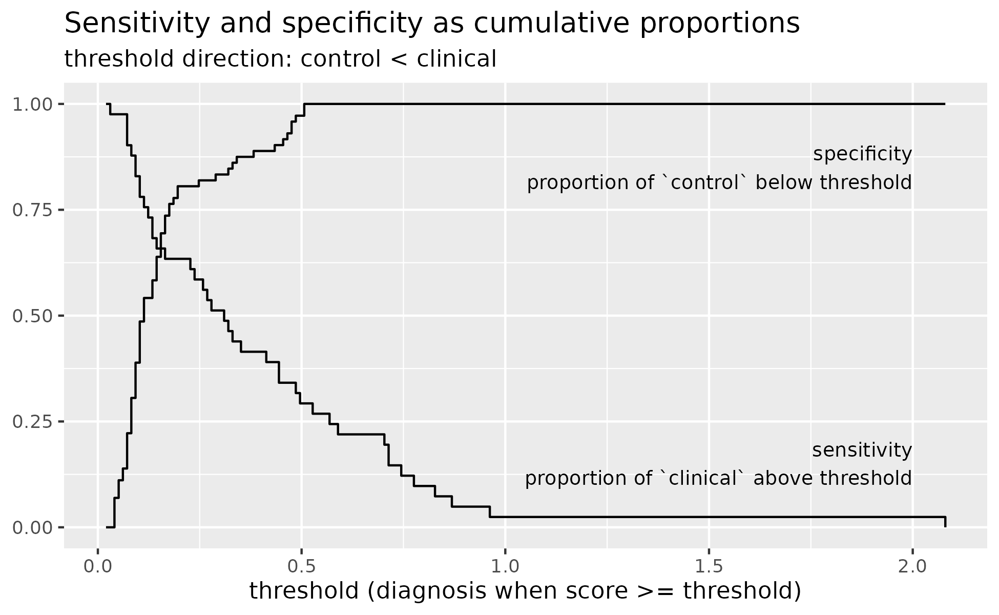

library(tidyverse)
library(wisclabmisc)
library(pROC, exclude = c("cov", "smooth", "var"))
#> Type 'citation("pROC")' for a citation.A primer on ROC curves
wisclabmisc provides functions for tidying results from ROC curves. These curves arise in diagnostic or classification settings where we want to use some test score to determine whether an individual belongs in a control group versus a case group. This binary classification could be normal versus clinical status, regular email versus spam status, and so on. I use the terminology control and case to follow the pROC package’s interface.
In this classification literature, there are tons and tons of statistics to describe classifier performance. The ROC curve centers around the two important quantities of sensitivity and specificity:
-
sensitivity is the proportion of true cases correctly identified as cases.
- Also called the true positive rate or recall.
- If I apply my spam classifier to 100 spam emails, how many will be correctly flagged as spam?
- P(case result | case status)
- Sensitivity makes sense to me if I think about the problem as detecting something subtle. (Like a Jedi being “force sensitive” or Spider-Man’s Spidey sense tingling when he’s in danger.)
-
specificity is the proportion of true controls correctly identified as controls.
- Also called the true negative rate or selectivity.
- If I apply my spam classifier to 100 safe (ham) emails, how many will be correctly ignored?
- P(control result | control status)
- Specificity is not a great term; selectivity makes slightly more sense. We don’t want the sensor to trip over noise: It needs to be specific or selective.
Suppose our diagnostic instrument provides a score, and we have to choose a diagnostic threshold for one of these scores. For example, suppose we decide that scores above 60 indicate that an email is probably spam and can be moved into the spam folder. Then that threshold will have its own specificity attached to it. We can look at the proportion of spam emails that are equal to or above 60 (sensitivity), and we can look at the proportion of ham emails that are below 60 (specificity). Each number we choose for the threshold will have its own sensitivity and specificity score, so an ROC curve is a visualization of how sensitivity and specificity change along the range of threshold scores. (More impenetrable terminology: ROC stands for “receiver operating characteristic”, having something to do with detections made by radar receivers at different operating levels.)
A worked example
We can work through an example ROC curve using the pROC package. pROC provides the aSAH dataset which provides “several clinical and one laboratory variable of 113 patients with an aneurysmal subarachnoid hemorrhage” (hence, aSAH).
We have the outcome (Good versus Poor) and some measure called s100b. We can see that that are many more Good outcomes near 0 and there are Poor outcomes.
data <- as_tibble(aSAH)
data
#> # A tibble: 113 × 7
#> gos6 outcome gender age wfns s100b ndka
#> <ord> <fct> <fct> <int> <ord> <dbl> <dbl>
#> 1 5 Good Female 42 1 0.13 3.01
#> 2 5 Good Female 37 1 0.14 8.54
#> 3 5 Good Female 42 1 0.1 8.09
#> 4 5 Good Female 27 1 0.04 10.4
#> 5 1 Poor Female 42 3 0.13 17.4
#> 6 1 Poor Male 48 2 0.1 12.8
#> 7 4 Good Male 57 5 0.47 6
#> 8 1 Poor Male 41 4 0.16 13.2
#> 9 5 Good Female 49 1 0.18 15.5
#> 10 4 Good Female 75 2 0.1 6.01
#> # … with 103 more rows
count(data, outcome)
#> # A tibble: 2 × 2
#> outcome n
#> <fct> <int>
#> 1 Good 72
#> 2 Poor 41
ggplot(data) +
aes(x = s100b, y = outcome) +
geom_point(
position = position_jitter(width = 0, height = .2),
size = 3,
alpha = .2,
) +
theme_grey(base_size = 12) +
labs(y = NULL)
For each point in a grid of points along s100b, we can compute the proportions of patients in each group above or below that threshold. We can then plot these proportions to visualize the trading relations between specificity and sensitivity as the threshold changes.
by_outcome <- split(data, data$outcome)
smallest_diff <- min(diff(unique(sort(data$s100b))))
grid <- tibble(
threshold = seq(
min(data$s100b) - smallest_diff,
max(data$s100b) + smallest_diff,
length.out = 200
)
)
roc_coordinates <- grid %>%
rowwise() %>%
summarise(
threshold = threshold,
prop_poor_above = mean(by_outcome$Poor$s100b >= threshold),
prop_good_below = mean(by_outcome$Good$s100b < threshold),
)
ggplot(roc_coordinates) +
aes(x = threshold) +
geom_step(aes(y = prop_poor_above)) +
geom_step(aes(y = prop_good_below)) +
annotate("text", x = 2, y = .9, hjust = 1, label = "specificity") +
annotate("text", x = 2, y = .1, hjust = 1, label = "sensitivity") +
labs(
title = "Sensitivity and specificity as cumulative proportions",
x = "threshold (diagnosis when score >= threshold)",
y = NULL
)
It took me about 5 tries to get this plot correct. I am able to convince myself by noting that all of the Good outcomes are less than .51 so the threshold should not catch a single Good outcome and hence have specificity of 1. Conversely, there is just Poor outcome above 1, so a threshold of 1 is going to detect 1 Poor outcome and hence have a very low sensitivity.
If we ignore the threshold in our visualization, we can (finally) plot a canonical ROC curve. It shows specificity in reversing order so that the most ideal point is the top left corner (sensitivity = 1, specificity = 1).
roc_coordinates <- roc_coordinates %>%
rename(
sensitivities = prop_poor_above,
specificities = prop_good_below
) %>%
# otherwise the stair-steps look wrong
arrange(sensitivities)
p <- ggplot(roc_coordinates) +
aes(x = specificities, y = sensitivities) +
geom_step() +
scale_x_reverse() +
coord_fixed() +
theme_grey(base_size = 14)
p
We can compare our plot to the one provided by pROC package. We find a perfect match in our sensitivity and specificity values.
roc <- pROC::roc(data, response = outcome, predictor = s100b)
#> Setting levels: control = Good, case = Poor
#> Setting direction: controls < cases
plot(roc)
proc_coordinates <- roc[2:3] %>%
as.data.frame() %>%
arrange(sensitivities)
# Plot the pROC point as a wide semi-transparent blue
# band on top of ours
p +
geom_step(
data = proc_coordinates,
color = "blue",
alpha = .5,
size = 2
)
Instead of computing ROC curves by hand, we defer the calculation of ROC curves to the pROC package because it is easy to get confused when calculating sensitivity and specificity and because pROC provides other tools for working with ROC curves. Thus, wisclabmisc’s goal with ROC curves is to provide helper functions fit ROC curves with pROC and return the results in a nice dataframe.
We contrast two types of ROC curves:
- an empirical ROC curve where the raw data is used to make a jagged ROC curve
- a (smooth) density ROC curve where the densities of two distributions are used to make a smooth ROC curve.
Emprical ROC curves
Let’s return the above example, predicting the group label outcome (case: Poor, control: Good) from the predictor s100b.
r <- pROC::roc(data, outcome, s100b)
#> Setting levels: control = Good, case = Poor
#> Setting direction: controls < cases
r
#>
#> Call:
#> roc.data.frame(data = data, response = outcome, predictor = s100b)
#>
#> Data: s100b in 72 controls (outcome Good) < 41 cases (outcome Poor).
#> Area under the curve: 0.7314From the messages, we can see that pROC::roc() makes a few decisions for us: that Good is the control level and Poor is the case level, and that controls should have a lower s100b than cases.
pROC::roc() returns an roc object which bundles all of the data and model results together. Ultimately, we want a the results in a dataframe so that one row will provide the sensitivity and specificity for each threshold value.
r
#>
#> Call:
#> roc.data.frame(data = data, response = outcome, predictor = s100b)
#>
#> Data: s100b in 72 controls (outcome Good) < 41 cases (outcome Poor).
#> Area under the curve: 0.7314
class(r)
#> [1] "roc"
str(r, max.level = 1, give.attr = FALSE)
#> List of 15
#> $ percent : logi FALSE
#> $ sensitivities : num [1:51] 1 0.976 0.976 0.976 0.976 ...
#> $ specificities : num [1:51] 0 0 0.0694 0.1111 0.1389 ...
#> $ thresholds : num [1:51] -Inf 0.035 0.045 0.055 0.065 ...
#> $ direction : chr "<"
#> $ cases : num [1:41] 0.13 0.1 0.16 0.12 0.44 0.71 0.49 0.07 0.33 0.09 ...
#> $ controls : num [1:72] 0.13 0.14 0.1 0.04 0.47 0.18 0.1 0.1 0.04 0.08 ...
#> $ fun.sesp :function (thresholds, controls, cases, direction)
#> $ auc : 'auc' num 0.731
#> $ call : language roc.data.frame(data = data, response = outcome, predictor = s100b)
#> $ original.predictor: num [1:113] 0.13 0.14 0.1 0.04 0.13 0.1 0.47 0.16 0.18 0.1 ...
#> $ original.response : Factor w/ 2 levels "Good","Poor": 1 1 1 1 2 2 1 2 1 1 ...
#> $ predictor : num [1:113] 0.13 0.14 0.1 0.04 0.13 0.1 0.47 0.16 0.18 0.1 ...
#> $ response : Factor w/ 2 levels "Good","Poor": 1 1 1 1 2 2 1 2 1 1 ...
#> $ levels : chr [1:2] "Good" "Poor"We can get close to a dataframe by manipulating the list or by using coords(). pROC::coords() has additional features that allow it to identify the “best” ROC points, but it strips off useful data like the direction used.
r[1:5] %>%
as.data.frame() %>%
tibble::as_tibble()
#> # A tibble: 51 × 5
#> percent sensitivities specificities thresholds direction
#> <lgl> <dbl> <dbl> <dbl> <chr>
#> 1 FALSE 1 0 -Inf <
#> 2 FALSE 0.976 0 0.035 <
#> 3 FALSE 0.976 0.0694 0.045 <
#> 4 FALSE 0.976 0.111 0.055 <
#> 5 FALSE 0.976 0.139 0.065 <
#> 6 FALSE 0.902 0.222 0.075 <
#> 7 FALSE 0.878 0.306 0.085 <
#> 8 FALSE 0.829 0.389 0.095 <
#> 9 FALSE 0.780 0.486 0.105 <
#> 10 FALSE 0.756 0.542 0.115 <
#> # … with 41 more rows
pROC::coords(r) %>%
tibble::as_tibble()
#> # A tibble: 51 × 3
#> threshold specificity sensitivity
#> <dbl> <dbl> <dbl>
#> 1 -Inf 0 1
#> 2 0.035 0 0.976
#> 3 0.045 0.0694 0.976
#> 4 0.055 0.111 0.976
#> 5 0.065 0.139 0.976
#> 6 0.075 0.222 0.902
#> 7 0.085 0.306 0.878
#> 8 0.095 0.389 0.829
#> 9 0.105 0.486 0.780
#> 10 0.115 0.542 0.756
#> # … with 41 more rowswisclabmisc provides compute_empirical_roc() which combines results from pROC::roc() and pROC::coords() into a tibble. It includes metadata about the .controls and .cases levels, the .direction of the relationship, and the overall .auc of the curve. It also identifies two “best” coordinates with .is_best_youden and is_best_closest_topleft. Finally, it retains the name of the predictor variable.
compute_empirical_roc(data, outcome, s100b)
#> Setting levels: control = Good, case = Poor
#> Setting direction: controls < cases
#> # A tibble: 51 × 9
#> s100b .specificities .sensitivities .auc .direction .controls .cases
#> <dbl> <dbl> <dbl> <dbl> <chr> <chr> <chr>
#> 1 -Inf 0 1 0.731 < Good Poor
#> 2 0.035 0 0.976 0.731 < Good Poor
#> 3 0.045 0.0694 0.976 0.731 < Good Poor
#> 4 0.055 0.111 0.976 0.731 < Good Poor
#> 5 0.065 0.139 0.976 0.731 < Good Poor
#> 6 0.075 0.222 0.902 0.731 < Good Poor
#> 7 0.085 0.306 0.878 0.731 < Good Poor
#> 8 0.095 0.389 0.829 0.731 < Good Poor
#> 9 0.105 0.486 0.780 0.731 < Good Poor
#> 10 0.115 0.542 0.756 0.731 < Good Poor
#> # … with 41 more rows, and 2 more variables: .is_best_youden <lgl>,
#> # .is_best_closest_topleft <lgl>We can still see the messages emitted by the pROC::roc() call when we use compute_empirical_roc(). We can pass the arguments direction and levels to pROC::roc() to silence these messages.
data_roc <- compute_empirical_roc(
data,
outcome,
s100b,
direction = "<",
levels = c("Good", "Poor")
)
data_roc
#> # A tibble: 51 × 9
#> s100b .specificities .sensitivities .auc .direction .controls .cases
#> <dbl> <dbl> <dbl> <dbl> <chr> <chr> <chr>
#> 1 -Inf 0 1 0.731 < Good Poor
#> 2 0.035 0 0.976 0.731 < Good Poor
#> 3 0.045 0.0694 0.976 0.731 < Good Poor
#> 4 0.055 0.111 0.976 0.731 < Good Poor
#> 5 0.065 0.139 0.976 0.731 < Good Poor
#> 6 0.075 0.222 0.902 0.731 < Good Poor
#> 7 0.085 0.306 0.878 0.731 < Good Poor
#> 8 0.095 0.389 0.829 0.731 < Good Poor
#> 9 0.105 0.486 0.780 0.731 < Good Poor
#> 10 0.115 0.542 0.756 0.731 < Good Poor
#> # … with 41 more rows, and 2 more variables: .is_best_youden <lgl>,
#> # .is_best_closest_topleft <lgl>According to the help page for pROC::coords() is Youden’s J statistic is the point that is farthest vertical distance from the diagonal line. The other “best” point is the point closest to the upper-left corner. The following plot labels each of these distances. The Youden’s point and the topleft point here are the same point.
data_roc <- data_roc %>%
arrange(.sensitivities)
p_best <- ggplot(data_roc) +
aes(x = .specificities, y = .sensitivities) +
geom_abline(
slope = 1,
intercept = 1,
linetype = "dotted",
color = "grey20"
) +
geom_step() +
geom_segment(
aes(xend = .specificities, yend = 1 - .specificities),
data = . %>% filter(.is_best_youden),
color = "blue",
linetype = "dashed"
) +
geom_segment(
aes(xend = 1, yend = 1),
data = . %>% filter(.is_best_closest_topleft),
color = "maroon",
linetype = "dashed"
) +
# Basically, finding a point 9/10ths of the way
# along the line
geom_text(
aes(
x = weighted.mean(c(1, .specificities), c(9, 1)),
y = weighted.mean(c(1, .sensitivities), c(9, 1)),
),
data = . %>% filter(.is_best_closest_topleft),
color = "maroon",
label = "closest to topleft",
hjust = 0,
nudge_x = .02,
size = 5
) +
geom_text(
aes(
x = .specificities,
y = weighted.mean(c(1 - .specificities, .sensitivities), c(1, 2)),
),
data = . %>% filter(.is_best_youden),
color = "blue",
label = "Youden's J\n(max height above diagonal)",
hjust = 0,
vjust = .5,
nudge_x = .02,
size = 5
) +
annotate(
"text",
x = .91,
y = .05,
hjust = 0,
size = 5,
label = "diagonal: random classifier",
color = "grey20"
) +
scale_x_reverse() +
coord_fixed() +
theme_grey(base_size = 12)
p_best
(Smooth) density ROC curves
Instead of looking at the observed data, let’s assume the s100b values in each group are drawn from a normal distribution but the means and scales (standard deviations) are different for the two groups. We can compute each group’s mean and standard deviation and then plot the normal density curves on top of each other. Pepe (2003) refers to this approach as the “binormal ROC curve”.
data_stats <- data %>%
group_by(outcome) %>%
summarise(
mean = mean(s100b),
sd = sd(s100b)
)
l_control <- data_stats %>%
filter(outcome == "Good") %>%
as.list()
l_case <- data_stats %>%
filter(outcome != "Good") %>%
as.list()
ggplot(data) +
aes(x = s100b, color = outcome) +
# include a "rug" at the bottom
geom_jitter(aes(y = -.2), width = 0, height = .15, alpha = .4) +
stat_function(
data = . %>% filter(outcome == "Good"),
fun = dnorm,
args = list(mean = l_control$mean, sd = l_control$sd)
) +
stat_function(
data = . %>% filter(outcome != "Good"),
fun = dnorm,
args = list(mean = l_case$mean, sd = l_case$sd)
) +
geom_text(
aes(x = mean, y = dnorm(mean, mean, sd), label = outcome),
data = data_stats,
vjust = "inward",
hjust = 0,
nudge_x = .05,
nudge_y = .05,
size = 4
) +
theme_grey(14) +
theme(legend.position = "top", legend.justification = "left") +
labs(y = NULL) +
guides(color = "none")At various points along the x-axis range, stat_function() compute dnorm() (the density of the normal curves). We can do that by hand too. We take the full range of the data, and then within each group, generate a set of points along that range and compute that group’s density at each point.
data_grid <- data %>%
mutate(
xmin = min(s100b),
xmax = max(s100b)
) %>%
group_by(outcome) %>%
summarise(
x = seq(xmin[1], xmax[1], length.out = 200),
group_mean = mean(s100b),
group_sd = sd(s100b),
density = dnorm(x, group_mean, group_sd),
.groups = "drop"
)
data_grid
#> # A tibble: 400 × 5
#> outcome x group_mean group_sd density
#> <fct> <dbl> <dbl> <dbl> <dbl>
#> 1 Good 0.03 0.162 0.131 1.84
#> 2 Good 0.0403 0.162 0.131 1.98
#> 3 Good 0.0505 0.162 0.131 2.13
#> 4 Good 0.0608 0.162 0.131 2.27
#> 5 Good 0.0710 0.162 0.131 2.40
#> 6 Good 0.0813 0.162 0.131 2.53
#> 7 Good 0.0915 0.162 0.131 2.64
#> 8 Good 0.102 0.162 0.131 2.75
#> 9 Good 0.112 0.162 0.131 2.84
#> 10 Good 0.122 0.162 0.131 2.91
#> # … with 390 more rowsNext, we pivot to a wide pivot format because we will be comparing the two densities at each point.
data_dens <- data_grid %>%
rename(s100b = x) %>%
select(-group_mean, -group_sd) %>%
pivot_wider(names_from = outcome, values_from = density)
data_dens
#> # A tibble: 200 × 3
#> s100b Good Poor
#> <dbl> <dbl> <dbl>
#> 1 0.03 1.84 0.659
#> 2 0.0403 1.98 0.676
#> 3 0.0505 2.13 0.694
#> 4 0.0608 2.27 0.711
#> 5 0.0710 2.40 0.729
#> 6 0.0813 2.53 0.746
#> 7 0.0915 2.64 0.763
#> 8 0.102 2.75 0.780
#> 9 0.112 2.84 0.797
#> 10 0.122 2.91 0.813
#> # … with 190 more rowspROC::roc() can compute an ROC curve from these densities. Note that the interface here is different. We do not provide a dataframe and names of columns in that data frame. Instead, we provide two vectors of densities, and in fact, those densities are lost after computing the ROC curve.
data_dens <- arrange(data_dens, s100b)
r_dens <- roc(
density.controls = data_dens$Good,
density.cases = data_dens$Poor
)
r_dens
#>
#> Call:
#> roc.default(density.controls = data_dens$Good, density.cases = data_dens$Poor)
#>
#> Smoothing: density with controls: data_dens$Good; and cases: data_dens$Poor
#> Area under the curve: 0.8299
plot(r_dens)
The roc object here returns the coordinates with sensitivity in decreasing order, so it is not obvious how to map these sensitivities back to the original densities. In terms of the earlier density plot, we don’t know whether the sensitivities move up the x axis or down the x axis.
Let’s restate the problem again, for clarity:
- We want to map thresholds to densities to ROC coordinates and map ROC coordinates back to densities to thresholds.
- With
pROC::roc(density.controls, density.controls), we hit a brick wall and cannot map backwards from ROC coordinates because the sensitivites may have been reversed with respect to the densities.
Fortunately, if we compute the sensitivities by hand, we can figure out how the coordinates were ordered. We try both orderings and find the one that best matches one provided by pROC::roc().
# direction > : Good > threshold >= Poor
sens_gt <- rev(cumsum(data_dens$Poor) / sum(data_dens$Poor))
# direction < : Good < threshold <= Poor
sens_lt <- 1 - (cumsum(data_dens$Poor) / sum(data_dens$Poor))
# The model did ??
fitted_sensitivities <- r_dens$sensitivities[-c(1, 201)]
mean(fitted_sensitivities - sens_lt)
#> [1] 0.004999997
mean(fitted_sensitivities - sens_gt)
#> [1] -0.530585Because the < direction better matched the ROC results, we conclude that the sensitivities follow the same order as the densities.
compute_smooth_density_roc() uses a similar heuristic to determine the order of the ROC coordinates with respect to the original densities. As a result, we can map the original threshold values to sensitivity and specificity values. The function also lets us use column names directly.
data_smooth <- compute_smooth_density_roc(
data = data_dens,
controls = Good,
cases = Poor,
along = s100b
)
data_smooth
#> # A tibble: 202 × 10
#> s100b Good Poor .sensitivities .specificities .auc .roc_row .direction
#> <dbl> <dbl> <dbl> <dbl> <dbl> <dbl> <int> <chr>
#> 1 0.03 1.84 0.659 1 0 0.830 2 <
#> 2 0.0403 1.98 0.676 0.992 0.0221 0.830 3 <
#> 3 0.0505 2.13 0.694 0.984 0.0460 0.830 4 <
#> 4 0.0608 2.27 0.711 0.975 0.0716 0.830 5 <
#> 5 0.0710 2.40 0.729 0.967 0.0989 0.830 6 <
#> 6 0.0813 2.53 0.746 0.958 0.128 0.830 7 <
#> 7 0.0915 2.64 0.763 0.949 0.158 0.830 8 <
#> 8 0.102 2.75 0.780 0.939 0.190 0.830 9 <
#> 9 0.112 2.84 0.797 0.930 0.223 0.830 10 <
#> 10 0.122 2.91 0.813 0.920 0.257 0.830 11 <
#> # … with 192 more rows, and 2 more variables: .is_best_youden <lgl>,
#> # .is_best_closest_topleft <lgl>compute_smooth_density_roc() also provides coordinates for the “best” thresholds by the Youden or topleft criteria. Because of the consistency between the two functions, we can just replace the data used to make annotated ROC curve with the smoothed ROC coordinates. In this case, the Youden and topleft points are different.
p_best + list(data_smooth)As a final demonstration, let’s compare the smooth and empirical ROC sensitivity and specificity values along the threshold values.
ggplot(data_smooth) +
aes(x = s100b) +
geom_line(
aes(color = "smooth", linetype = "smooth", y = .sensitivities),
) +
geom_line(
aes(color = "empirical", linetype = "smooth", y = .sensitivities),
data = data_roc
) +
geom_line(
aes(color = "smooth", linetype = "empirical", y = .specificities)
) +
geom_line(
aes(color = "empirical", linetype = "empirical", y = .specificities),
data = data_roc
) +
annotate("text", x = 2, y = .9, hjust = 1, label = "specificity") +
annotate("text", x = 2, y = .1, hjust = 1, label = "sensitivity") +
labs(
color = "ROC type",
linetype = "ROC type",
y = NULL
) +
theme_grey(base_size = 12) +
theme(legend.position = "top")
#> Warning: Removed 2 row(s) containing missing values (geom_path).
#> Removed 2 row(s) containing missing values (geom_path).